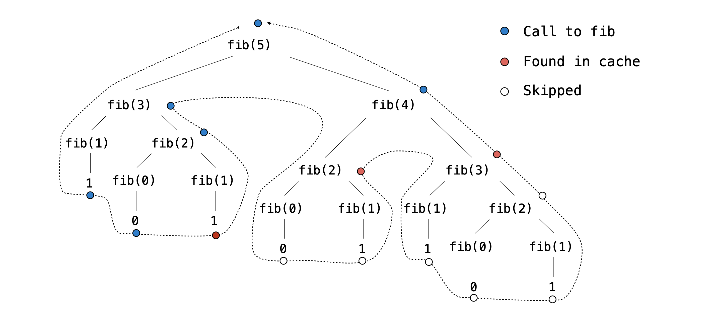

Project 2: CS 61A Autocorrected Typing Software
Programmers dream of
Abstraction, recursion, and
Typing really fast.
Introduction
Important submission note: For full credit:
- Submit with Phases 1 and 2 complete by Tuesday, July 9, worth 1 pt.
- Submit with all phases complete by Tuesday, July 16.
Try to attempt the problems in order, as some later problems will depend on earlier problems in their implementation and therefore also when running
oktests.The entire project can be completed with a partner.
You can get 1 bonus point by submitting the entire project by Monday, July 15.
In this project, you will write a program that measures typing speed. Additionally, you will implement typing autocorrect, which is a feature that attempts to correct the spelling of a word after a user types it. This project is inspired by typeracer.
Final Product
Our staff solution to the project can be interacted with at cats.cs61a.org. If you'd like, feel free to try it out now. When you finish the project, you'll have implemented a significant part of this yourself, including the multiplayer mode!
Download Starter Files
You can download all of the project code as a zip archive.
This project includes several files, but your changes will be made only to
cats.py. Here are the files included in the archive:
cats.py: The typing test logic.utils.py: Utility functions for interacting with files and strings.ucb.py: Utility functions for CS 61A projects.data/sample_paragraphs.txt: Text samples to be typed. These are scraped Wikipedia articles about various subjects.data/common_words.txt: Common English words in order of frequency.data/words.txt: Many more English words in order of frequency.data/final_diff_words.txt: Even more English words!data/testcases.out: Test cases for the optional Final Diff extension.cats_gui.py: A web server for the web-based graphical user interface (GUI).gui_files: A directory of files needed for the graphical user interface (GUI).multiplayer: A directory of files needed to support multiplayer mode.favicons: A directory of icons.images: A directory of images.ok,proj02.ok,tests: Testing files.score.py: Part of the optional Final Diff extension.
Logistics
The project is worth 19 points. 19 points are for correctness and 1 point is for submitting Phases 1 & 2 by the checkpoint date. In addition, there are 2 points of extra credit available for the efficiency extension (Phase 4 Problem EC).
You will turn in the following files:
cats.py
You do not need to modify or turn in any other files to complete the project. To submit the project, submit the required files to the appropriate Gradescope assignment.
For the functions that we ask you to complete, there may be some initial code that we provide. If you would rather not use that code, feel free to delete it and start from scratch. You may also add new function definitions as you see fit.
However, please do not modify any other functions or edit any files not listed above. Doing so may result in your code failing our autograder tests. Also, please do not change any function signatures (names, argument order, or number of arguments).
Throughout this project, you should be testing the correctness of your code. It is good practice to test often, so that it is easy to isolate any problems. However, you should not be testing too often, to allow yourself time to think through problems.
We have provided an autograder called ok to help you
with testing your code and tracking your progress. The first time you run the
autograder, you will be asked to log in with your Ok account using your web
browser. Please do so. Each time you run ok, it will back up
your work and progress on our servers.
The primary purpose of ok is to test your implementations.
If you want to test your code interactively, you can run
python3 ok -q [question number] -iwith the appropriate question number (e.g.
01) inserted.
This will run the tests for that question until the first one you failed,
then give you a chance to test the functions you wrote interactively.
You can also use the debugging print feature in OK by writing
print("DEBUG:", x)
which will produce an output in your terminal without causing OK tests to fail
with extra output.
Getting Started Videos
To see these videos, you should be logged into your berkeley.edu email.
Phase 1: Typing
Reminder: Throughout the project, we will only be making changes to functions in
cats.py.
Problem 1 (1 pt)
Implement pick. This function selects which paragraph the user will type for the typing test.
It takes three parameters:
paragraphs: a list of potential paragraphs (strings)select: a function that evaluates a paragraph and returnsTrueif it meets certain criteria, andFalseotherwisek: a non-negative integer representing the index of the desired paragraph among those that meet the criteria
The pick function returns the kth paragraph that satisfies the select function.
If no such paragraph exists (because k is greater than or equal to the number of qualifying paragraphs), then pick
returns an empty string.
Hint: Don't worry about the specific implementation of the
selectfunction. Just assume it takes a paragraph as input and returnsTrueorFalse. Reminder: Indexing starts at 0. Ifkis 0, we want to pick the first qualifying paragraph.
Before writing any code, unlock the tests to verify your understanding of the question:
python3 ok -q 01 -uOnce you are done unlocking, begin implementing your solution. You can check your correctness with:
python3 ok -q 01Problem 2 (1 pt)
Implement the about function, which takes a list of subject words. It returns a
function that, when given a paragraph, checks whether the paragraph contains any of
the words from the subject list. The returned function will return True if any of the
words in the subject list are found in the paragraph and False otherwise.
Once about is implemented, we can use the function it returns as the select argument in pick.
This is useful because it allows us to filter paragraphs based on whether they contain any words from the subject list provided to the about function.
This functionality will be useful as we continue to develop our typing test.
To ensure accurate comparisons, you will need to:
- Ignore case (treat uppercase and lowercase letters as equivalent).
- Ignore punctuation in the paragraph.
- Only check for exact matches of the words in the
subjectlist, not substrings. For example, instances of "dogs" inparagraphshould not match "dog" insubject.
Hint: Use the
split,lower, andremove_punctuationfunctions inutils.py.
Before writing any code, unlock the tests to verify your understanding of the question:
python3 ok -q 02 -uOnce you are done unlocking, begin implementing your solution. You can check your correctness with:
python3 ok -q 02Problem 3 (2 pts)
Implement accuracy, which takes both a typed paragraph and a source
paragraph. It returns the percentage of words in typed that exactly match
the corresponding words in source. Case and punctuation must match as
well. "Corresponding" here means that two words must occur at the same indices
in typed and source; the first words of both must match, the second words
of both must match, and so on.
A word in this context is any sequence of characters separated from other words by whitespace. Therefore, treat sequences like "dog;" as a single word.
If typed is longer than source, then the extra words in typed that
have no corresponding word in source are all incorrect.
If both typed and source are empty, then the accuracy is 100.0.
If typed is empty but source is not empty, then the accuracy is zero.
If typed is not empty but source is empty, then the accuracy is zero.
In the actual typing test, typed represents what the player has typed, and source is the paragraph they are attempting to replicate.
Before writing any code, unlock the tests to verify your understanding of the question:
python3 ok -q 03 -uOnce you are done unlocking, begin implementing your solution. You can check your correctness with:
python3 ok -q 03Problem 4 (1 pt)
Implement wpm, which computes the words per minute, a measure of typing
speed, given a string typed and the amount of elapsed time in seconds.
Despite its name, words per minute is not based on the number of words typed,
but instead the number of groups of 5 characters, so that a typing test is not
biased by the length of words. The formula for words per minute is the ratio
of the number of characters (including spaces) typed divided by 5 (a typical
word length) to the elapsed time in minutes.
For example, the string "I am glad!" contains ten characters
(not including the quotation marks). The words per minute calculation uses 2 as
the number of words typed (because 10 / 5 = 2). If someone typed this string in
30 seconds (half a minute), their speed would be 4 words per minute.
Before writing any code, unlock the tests to verify your understanding of the question:
python3 ok -q 04 -uOnce you are done unlocking, begin implementing your solution. You can check your correctness with:
python3 ok -q 04Time to test your typing speed! You can use the command line to test your
typing speed on paragraphs about a particular subject. For example, the command
below will load paragraphs about cats or kittens. See the run_typing_test
function for the implementation if you're curious (but it is defined for you).
python3 cats.py -t cats kittensYou can also try out the web-based graphical user interface (GUI) using the
following command.
(You may have to use Ctrl+C or Cmd+C on your terminal to quit the GUI
after you close the tab in your browser).
python3 cats_gui.pyPhase 2: Autocorrect
In the web-based GUI, there is an autocorrect button, but right now it doesn't do anything. Let's implement automatic typo correction. Whenever the user presses the space bar, if the last word they typed doesn't match a word in the dictionary but is close to one, then that similar word will be substituted for what they typed.
Problem 5 (2 pts)
Implement autocorrect, which takes a typed_word, a
word_list, a diff_function, and a limit. The goal of autocorrect
is to return the word in word_list that is closest to the provided
typed_word, as determined by diff_function.
Specifically, autocorrect does the following:
- If the
typed_wordis contained inside theword_list,autocorrectreturns that word. - Otherwise,
autocorrectreturns the word fromword_listthat has the lowest difference from the providedtyped_wordbased on thediff_function. - However, if the lowest difference between
typed_wordand any of the words inword_listis greater thanlimit, thentyped_wordis returned instead. In other words,limitsets a maximum threshold on how severe a typo can be for it to still be corrected.
Assume that typed_word and all elements of word_list are lowercase and
have no punctuation.
Important: If multiple strings in
word_listare tied for the lowest difference fromtyped_word,autocorrectshould return the string that appears closest to the front ofword_list.
A diff function takes in three arguments. The first is the typed_word, the second is
the source word (in this case, a word from word_list), and
the third argument is the limit. The output of the diff function, which is
a number, represents the amount of difference between the two strings.
Here is an example of a diff function that computes the minimum of 1 + limit
and the difference in length between the two input strings:
>>> def length_diff(w1, w2, limit):
... return min(limit + 1, abs(len(w2) - len(w1)))
>>> length_diff('mellow', 'cello', 10)
1
>>> length_diff('hippo', 'hippopotamus', 5)
6Note: For conciseness, some unlocking tests use a ternary operator when defining a lambda function. A ternary operator is the one-line version of an
ifstatement.For example, in one of the ok tests, we define a diff function as
first_diff = lambda w1, w2, limit: 1 if w1[0] != w2[0] else 0. Here, lambda function returns 1 if the first characters ofw1andw2are different, otherwise it returns 0.
Here is a helpful hint for implementing autocorrect:
Hint: Try using
maxorminwith the optionalkeyargument (which takes in a one-argument function). For example,max([-7, 2, -1], key = abs)would return-7sinceabs(-7)is greater thanabs(2)andabs(-1).
Before writing any code, unlock the tests to verify your understanding of the question:
python3 ok -q 05 -uOnce you are done unlocking, begin implementing your solution. You can check your correctness with:
python3 ok -q 05Problem 6 (3 pts)
Implement furry_fixes, a diff function that could be passed into the diff_function parameter in autocorrect.
This function takes in two strings and returns the minimum number of characters that must be changed in the typed
word in order to transform it into the source word. If the strings are not of
equal length, the difference in lengths is added to the total difference count.
Here are some examples:
>>> big_limit = 10
>>> furry_fixes("nice", "rice", big_limit) # Substitute: n -> r
1
>>> furry_fixes("range", "rungs", big_limit) # Substitute: a -> u, e -> s
2
>>> furry_fixes("pill", "pillage", big_limit) # Don't substitute anything, length difference of 3.
3
>>> furry_fixes("goodbye", "good", big_limit) # Don't substitute anything, length difference of 3.
3
>>> furry_fixes("roses", "arose", big_limit) # Substitute: r -> a, o -> r, s -> o, e -> s, s -> e
5
>>> furry_fixes("rose", "hello", big_limit) # Substitute: r->h, o->e, s->l, e->l, length difference of 1.
5Important: You may not use
while,for, or list comprehensions in your implementation. Use recursion.
If the number of characters that must change is greater than limit,
then furry_fixes should return any number larger than limit and
should minimize the amount of computation needed to do so.
Why is there a limit? From Problem 5, we know that
autocorrectwill reject anysourceword whose difference with thetypedword is greater thanlimit. It doesn't matter if the difference is greater thanlimitby 1 or by 100; autocorrect will reject it just the same. Therefore, as soon as we know the difference is abovelimit, it makes sense to try to minimize the extra computation of making unnecessary recursive calls, even if the returned difference won't be exactly correct.These two calls to
furry_fixesshould take about the same amount of time to evaluate:>>> limit = 4 >>> furry_fixes("roses", "arose", limit) > limit True >>> furry_fixes("rosesabcdefghijklm", "arosenopqrstuvwxyz", limit) > limit True
To ensure that you are correctly minimizing the amount of extra computation that
is performed after the limit is reached, there is an autograder test that
measures the performance of your solution based on the number of function calls
that it makes. If you fail this test, consider how you can minimize the number of
recursive calls you make. In general, reducing the number of function calls is desired
because it improves the efficiency and speed of your function.
Hint: you will need more than one base case to solve this problem.
Before writing any code, unlock the tests to verify your understanding of the question:
python3 ok -q 06 -uOnce you are done unlocking, begin implementing your solution. You can check your correctness with:
python3 ok -q 06Try turning on autocorrect in the GUI. Does it help you type faster? Are the corrections accurate?
Problem 7 (3 pts)
Implement minimum_mewtations, a more advanced diff function that can be used in autocorrect, which
returns the minimum number of edit operations needed to transform the typed word into
the source word.
There are three kinds of edit operations, with some examples:
Add a letter to
typed.- Adding
"k"to"itten"gives us"kitten".
- Adding
Remove a letter from
typed.- Removing
"s"from"scat"givs us"cat".
- Removing
Substitute a letter in
typedfor another.- Substituting
"z"with"j"in"zaguar"gives us"jaguar".
- Substituting
Each edit operation contributes 1 to the difference between two words.
>>> big_limit = 10
>>> minimum_mewtations("cats", "scat", big_limit) # cats -> scats -> scat
2
>>> minimum_mewtations("purng", "purring", big_limit) # purng -> purrng -> purring
2
>>> minimum_mewtations("ckiteus", "kittens", big_limit) # ckiteus -> kiteus -> kitteus -> kittens
3We have provided a template of an implementation in cats.py. You may modify the template however you want or delete it entirely.
Hint: One of the recursive calls in
minimum_mewtationswill be similar tofurry_fixes. However, becauseminimum_mewtationsconsiders specific types of edits (add, remove, substitute), there will need to be additional recursive calls to handle each of these cases.
If the number of edits required is greater than limit,
then minimum_mewtations should return any number larger than limit and
should minimize the amount of computation needed to do so.
These two calls to
minimum_mewtationsshould take about the same amount of time to evaluate:>>> limit = 2 >>> minimum_mewtations("ckiteus", "kittens", limit) > limit True >>> minimum_mewtations("ckiteusabcdefghijklm", "kittensnopqrstuvwxyz", limit) > limit True
To ensure that you are correctly minimizing the amount of extra computation that is performed
after the limit is reached, there is an autograder test that measures the performance of your
solution based on the number of function calls that it makes. You should aim to minimize the number
of recursive calls you make by having the tightest base cases possible.
Important: You should not use any helper functions in your implementation of
minimum_mewtations. Otherwise the autograder test might fail.Important: Rememebr to remvoe the following line of code when you are ready to test your implementation:
assert False, 'Remove this line'
Before writing any code, unlock the tests to verify your understanding of the question:
python3 ok -q 07 -uOnce you are done unlocking, begin implementing your solution. You can check your correctness with:
python3 ok -q 07Try typing again. Are the corrections more accurate?
python3 cats_gui.py(Optional) Extension: Final Diff (0 pts)
You may optionally design your own diff function called
final_diff. Here are some ideas for making even more accurate corrections:
- Take into account which additions and deletions are more likely than others. For example, it's much more likely that you'll accidentally leave out a letter if it appears twice in a row.
- Treat two adjacent letters that have swapped positions as one change, not two.
- Try to incorporate common misspellings.
You can also set the limit you'd like your diff function to use by changing
the value of the variable FINAL_DIFF_LIMIT in cats.py.
You can check your final_diff's success rate by running:
python3 score.pyIf you don't know where to start, try copy-pasting your code for furry_fixes
and minimum_mewtations into final_diff and scoring them. Looking at the
typos they accidentally fixed might give you some ideas!
Checkpoint Submission
Check to make sure that you completed all the problems in Phase 1 and Phase 2:
python3 ok --scoreThen, submit cats.py to the Cats Checkpoint assignment on Gradescope before the checkpoint deadline.
When you run ok commands, you'll still see that some tests are locked
because you haven't completed the whole project yet. You'll get full credit for
the checkpoint if you complete all the problems up to this point.
Phase 3: Multiplayer
Typing is more fun with friends! You'll now implement multiplayer
functionality, so that when you run cats_gui.py on your computer,
it connects to the course server at
cats.cs61a.org
and looks for someone else to race against.
To race against a friend, 5 different programs will be running:
- Your GUI, which is a program that handles all the text coloring and display in your web browser.
- Your
cats_gui.py, which is a web server that communicates with your GUI using the code you wrote incats.py. - Your opponent's
cats_gui.py. - Your opponent's GUI.
- The CS 61A multiplayer server, which matches players together and passes messages around.
When you type, your GUI uploads what you have typed to your cats_gui.py server,
which computes how much progress you have made and returns a progress update.
This server also uploads a progress update to the CS 61A multiplayer server, so that your
opponent's GUI can also display your progress.
Meanwhile, your GUI display constantly tries to stay current by requesting
your opponent's progress updates from cats_gui.py, which, in turn, retrieves
that information from the multiplayer server.
Each player has an id number that is used by the server to track typing
progress.
Problem 8 (2 pts)
Implement report_progress, which is called every time the user finishes
typing a word. It takes a list of the words typed, a list of the words in
the source, the user's user_id, and a upload function that is used to upload
a progress report to the multiplayer server. There will never be more words in
typed than in source.
Your progress is a ratio of the words in the source that you have typed
correctly, up to the first incorrect word, divided by the number of source
words. For example, this example has a progress of 0.25:
report_progress(["Hello", "ths", "is"], ["Hello", "this", "is", "wrong"], ...)Your report_progress function should do two things: upload a message to the
multiplayer server and return the progress of the player with user_id.
To upload a message to the multiplayer server, call the upload function on a two-element
dictionary containing the keys 'id' and 'progress'. The function should then return
the player's progress, which is the ratio of words you computed.
Hint: See the dictionary below for an example of a potential input into the
uploadfunction. This dictionary represents a player withuser_id1 andprogress0.6.
{'id': 1, 'progress': 0.6}
Before writing any code, unlock the tests to verify your understanding of the question:
python3 ok -q 08 -uOnce you are done unlocking, begin implementing your solution. You can check your correctness with:
python3 ok -q 08Problem 9 (1 pt)
Implement time_per_word, which takes in two arguments:
words: a list of words that players are typing.timestamps_per_player: a list of lists where each inner list contains the timestamps indicating when each player finished typing each word inwords.
The function should return two values:
- The list of words that the players are typing.
- A list of lists
timesthat stores the durations it took each player to type each word. Specifically, the value attimes[i][j]should indicate how long it took playerito type the word atwords[j].
Timestamps found in the parameter timestamps_per_player are
cumulative and always increasing, while the values in times are
differences between consecutive timestamps for each player.
Here's an example:
If timestamps_per_player = [[1, 3, 5], [2, 5, 6]], then times would be [[2, 2], [3, 1]].
This is because the first player finished typing each word at timestamps 1, 3, and 5, while the second player finished typing each word attimestamps 2, 5, and 6.
So the differences in timestamps are
(3-1), (5-3) for the first player and
(5-2), (6-5) for the second player.
The first value of each list within timestamps_per_player represents the
initial starting time for each player.
Before writing any code, unlock the tests to verify your understanding of the question:
python3 ok -q 09 -uOnce you are done unlocking, begin implementing your solution. You can check your correctness with:
python3 ok -q 09Problem 10 (1 pt)
Time for data abstraction!
Implement time_per_word_match, which takes in the same two arguments as time_per_word, and returns a Match object that contains all the words typed and the times it took each player to type each word. In other words, time_per_word_match only differs from time_per_word in that it returns a Match object (instead of two lists).
To create a Match object, you should use the match data abstraction's constructor function, defined as follows:
def match(words, times):
"""Creates a data abstraction containing all words typed and their times.
Arguments:
words: A list of strings, each string representing a word typed.
times: A list of lists for how long it took for each player to type
each word.
times[i][j] = time it took for player i to type words[j].
Example input:
words: ['Hello', 'world']
times: [[5, 1], [4, 2]]
"""Assume this function has been defined for you. We do not show the actual implementation
of the match constructor here, because as with any data abstraction, you should only focus on what the
function does rather than its specific implementation.
Using data abstraction is good practice because it ensures that your code will continue to work correctly, even if the underlying data structures used in the constructor and selector functions have changed.
Important: Be sure to use the
matchconstructor (i.e., the function calledmatch) to create and return theMatchobject. The tests will check that you are using thematchdata abstraction rather than assuming a particular data format. Do not break the abstraction barrier!!Important: Don't re-invent the wheel! You should make use of the
time_per_wordfunction (You implement this in Problem 9) to avoid repeating code.
Before writing any code, unlock the tests to verify your understanding of the question:
python3 ok -q 10 -uOnce you are done unlocking, begin implementing your solution. You can check your correctness with:
python3 ok -q 10Problem 11 (2 pts)
Implement fastest_words, which returns which words each player typed fastest.
This function is called once all players have finished typing.
It takes in match_object, a Match object (again, data abstraction here!) created by the match constructor.
Specifically, the fastest_words function returns a list of lists of words,
one list for each player, with each list containing the words they typed the fastest
compared to all the other players. In the case of a tie, consider the earliest player
in the list (the player with the smallest index) to be the one who typed it the fastest.
For example consider the following match with the words 'Just', 'have', and
'fun'. Player 0 typed 'fun' the fastest (3 seconds), Player 1 typed 'Just'
the fastest (4 seconds), and they tied on the word 'have' (both took 1 second).
In this case, Player 0 is considered the fastest for 'have' because they are
the earliest player in the list.
>>> player_0 = [5, 1, 3]
>>> player_1 = [4, 1, 6]
>>> fastest_words(match(['Just', 'have', 'fun'], [player_0, player_1]))
[['have', 'fun'], ['Just']]The match_object argument is a Match data abstraction, just like the one we returned in Problem 10.
- You can access words in a
Matchwith the selector functionget_word, which takes in amatch_objectand theword_index(an integer). - In addition, you can access the time it took a player to type the word at a particular
index using the
get_timefunction, which takes in amatch_object,player_num(an integer), andword_index. - With these two functions and a
match_object, we can easily access the time it took any player to type any word!
>>> player_0 = [5, 1, 3]
>>> player_1 = [4, 1, 6]
>>> ex_match = match(['Just', 'have', 'fun'], [player_0, player_1])
>>> get_word(ex_match, 2)
'fun'
>>> get_time(ex_match, 0, 2)
3Here are the definitions of all the selector functions we have provided for you, laid out for your reference:
def get_word(match_object, word_index):
"""A utility function that gets the word with index word_index"""
def get_time(match_object, player_num, word_index):
"""A utility function for the time it took player_num to type the word at word_index"""
def get_all_words(match_object):
"""A selector function for all the words in the match"""
def get_all_times(match_object):
"""A selector function for all typing times for all players"""
def match_string(match_object):
"""A helper function that takes in a match data abstraction and returns a string representation of it"""Important: Be sure to use the selectors when using a
Match. The tests will check that you are using theMatchdata abstraction rather than assuming a particular data format.Make sure your implementation does not mutate the given player input lists. For the example above, calling
fastest_wordson[player_0, player_1]should not mutateplayer_0orplayer_1.There might not always be two players, so generalize this function in a way that will allow it to handle an indeterminate number of players.
Before writing any code, unlock the tests to verify your understanding of the question:
python3 ok -q 11 -uOnce you are done unlocking, begin implementing your solution. You can check your correctness with:
python3 ok -q 11Congratulations! Now you can play against other students in the course. Set
enable_multiplayer to True near the bottom of cats.py and type swiftly!
python3 cats_gui.pyPhase 4: Efficiency (Extra Credit)
Problem EC (2 pt)
During Office Hours and Project Parties, the staff will prioritize helping students with required questions. We will not be offering help with this question unless the queue is empty. In this problem, you will implement memoization decorators that will increase the efficiency of our our program by "remembering" the results of particularly intensive operations.
Make sure you're familiar with the decorators and memoization. If you would like a refresher, open the dropdown boxes below for more information.
Specifically, a decorator function is a higher-order function that...
- Takes the original function as an input
- Returns a new function with modified functionality
- This new function must contain the same arguments as the original function
An example of a decorator that executes a one-input function twice is shown below:
>>> def do_twice(original_function):
... def repeat(x):
... original_function(x)
... original_function(x)
... return repeatWe can apply this function in multiple contexts:
# Printing a value twice
>>> @do_twice
... def print_value(x):
... print(x)
...
>>> print_value(5)
5
5
# Adding an item to a list twice
>>> lst = []
>>> @do_twice
... def add_to_list(item):
... lst.append(item)
...
>>> add_to_list(5)
>>> lst
[5, 5]Additionally, note that we could also directly call the decorator function instead of using the @ notation (i.e. print_value = do_twice(print_value)).
However, it's typically useful to place decorators directly above the function that we are modifying since they better describe how these functions
are being changed in our code.
fib that is defined in lecture.

Noticed how many redundant recursive calls there are in the above tree diagram. Our goal is to have our program store past results of evaluated recursive calls so that we can reuse them if the same recursive call comes up in the future. For example, the first branch of fib(5) calls fib(3), which has not yet been evaluated. So we must go through all of its subsequent recursive calls to find its return value. However when we encounter the call to fib(3) that is a branch of fib(4), we have already found its return value before! So if we have a way to store and retrieve that information in something called a cache, we can avoid needless computation. We no longer need to make any subsequent recursive calls to its branches fib(1) and fib(2). This
is the concept of memoization: store the results of expensive computations in a cache, and retrieve information from the cache in the case we
execute a repeated action.
We will be working with two memoization decorators. memo is a general all-purpose decorator that memoizes the function it annotates. If memo encounters
an input it has not seen, it will store the calculated result into its cache. If memo receives an input it has already seen, it will take the stored
value in the cache and returns it directly without doing any extra computation. We have provided you with the full implementation of memo.
Your task is to implement memo_diff. memo_diff is a higher-order function that takes in a diff_function and returns another diff function called memoized that, like all diff functions, takes in typed, source, and limit. memoized should do the following:
- When
memoizedsees a (typed,source) pair for the first time, it should calculate the difference usingdiff_functionand cache that value along with thelimitused as a (value,limit) tuple pair. - If
memoizedencounters the (typed,source) pair again, it should return the memoizedvalueif the providedlimitis less than or equal to the cached limit. Otherwise, the difference should be recalculated, recached, and returned.
Important: When implementing this function, make sure you store pairs of values in the cache with a tuple, not a list. In dictionaries, keys must be immutable (that's why using a tuple is fine, but using a list is not). If you're curious about why
memo_diffis different thanmemoand is implemented in this way, reference the dropdown below:
memo and memo_diff differ? Although memo stores only the result of a function call, memo_diff takes into account an additional constraint, limit, that affects whether the cached result can be used or not. When the memo_diff function is called with a (typed, source) pair, it doesn’t just check if the pair has been seen before; it also checks if the limit is less than or equal to the cached limit. This is an additional check that memo does not perform.
Why is limit handled this way? We already know that the limit represents the maximum
difference that a diff function cares about—that is, differences above the limit might
as well be the same. So diff functions will provide an accurate difference value when it is
below the limit and an inaccurate one when it is above the limit. Therefore, we can trust a
cached difference value if it was calculated with a higher limit, but we can't trust ones
calculated with a lower limit.
For example, the result of the first call below would allow us to predict the result of the second call. The higher limit provides us with more information. However, the second call would not allow us to predict the first one.
>>> minimum_mewtations("hello", "hasldfasdfsffsfasdf", 100)
17
>>> minimum_mewtations("hello", "hasldfasdfsffsfasdf", 2)
3Once you've implemented memo_diff, finish by:
- Decorating
autocorrectwithmemo. - Decorating
minimum_mewtationswithmemo_diff.
Running autocorrect and minimum_mewtations should now be much faster!
Note: If you are failing the autograder tests involving
call_count, it is likely that yourminimum_mewtationsimplementation (from Q7) is not having the tightest base cases possible and still needs some optimization. The tests from Q7 are not meant to be strict, so even if you passed the Q7 tests, your base cases might still not be the tightest. Make sure you are not making unnecessary recursive calls. We are being strict about this here because having the tightest base cases is crucial for the efficiency of your code.Important: Try it yourself first! Only consult the following common mistakes section if you have been stuck on one test case for a while. Otherwise, you might not learn as much from the project.
- Consider the case
minimum_mewtations(typed = "maooo", source = "mao", limit = 0): since no transformations are allowed and the two words are not the same, how quick can your function figure out that the result is impossible? - Consider the case
minimum_mewtations(typed = "habc", source = "hmao", limit = some_limit_greater_than_zero): Given that both strings start with the same characterh, what is the most effective approach in this situation? Should the function even attempt to "add" (resulting inhabcandmao) or "remove" (resulting inabcandhmao)? Does your implementation take advantage of this optimization?
Note: The autograder takes a bit of time to run, but it should not be longer than 10 seconds.
Before writing any code, unlock the tests to verify your understanding of the question:
python3 ok -q EC -uOnce you are done unlocking, begin implementing your solution. You can check your correctness with:
python3 ok -q ECProject Submission
Run ok on all problems to make sure all tests are unlocked and pass:
python3 okYou can also check your score on each part of the project:
python3 ok --scoreOnce you are satisfied, submit this assignment by uploading cats.py to the Cats assignment on Gradescope. For a refresher on how to do this, refer to Lab 00.
You can add a partner to your Gradescope submission by clicking on + Add Group Member under your name on the right hand side of your submission. Only one partner needs to submit to Gradescope.